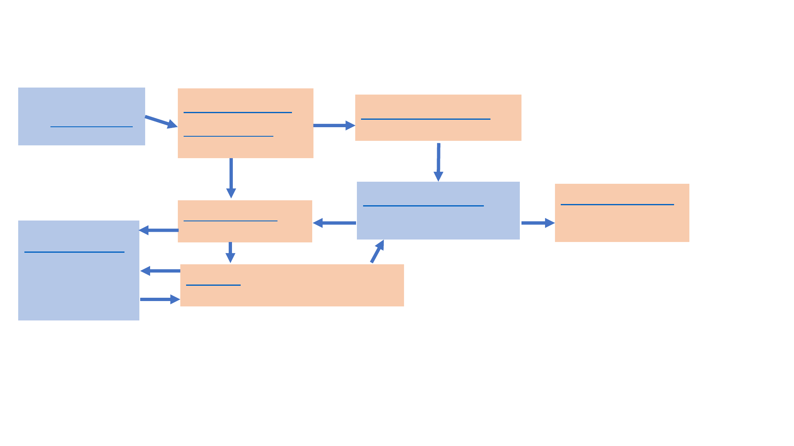

USGS MAP Project
Groundwater modeling workflow
Modflow-setup
(model construction)
Input Data
from the MAP project
and other sources
USGS-map-
gwmodels
(Preprocessing)
Modflow-obs
(PEST observations)
pyEMU
(PEST parameterization + analysis)
Modflow-export
(Model visualization
+ analysis)
MODFLOW-6
Simulation of groundwater
flow and streams, etc.
PEST++
Model parameter
estimation and
uncertainty analysis